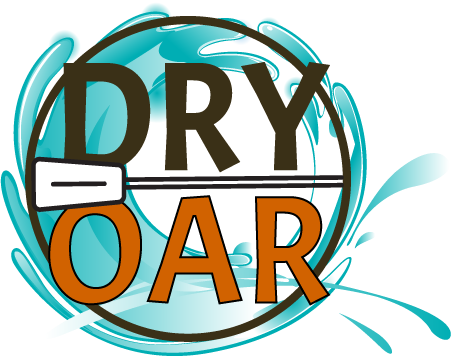

Overview
Purpose
Here at White Water Rafting we want to have a place for pro's and begginers alike to have a place to learn and to give insight into a hobby you are interested in. At White Water Rafting its more than a hobby, it's a community here you will be able to find the best places to go rafting, the best gear to be prepared, and to gain the necessary knowledge to get set out on your first or hundredth trip, welcoome!
Audience
Our target audience at White Water Rafting are those 18 - 40 year olds either looking to beggin their thrill seeking adventures or looking to be prepared for their last before settling down. Those who are interested in getting out into nature and dont mind getting a little messy or wet while doing so. We are a budget friendly wwebsite aiming to get you in the best possible gear and rafting spots for the best possible price.
At White Water Rafting we set ourselves apart from the competition by having an all in one website to help you on your next trip. We have all the information on gear, locations, safety, and personalized recommendations based on preferences, locations, and skill / comfort level.
Unlike many other rafting sites we understand the need to have information on the go, this website is built with adventure and savings in mind first, thats why here our website will be optomized for those on the go devices like phones, tablets, laptops.
Branding
Website Logo
Style Guide
Color Palette
Palette URL:
https://coolors.co/palette/264653-2a9d8f-e9c46a-f4a261-e76f51| Primary | Secondary | Accent 1 | Accent 2 |
|---|---|---|---|
| #2a9d8f | #e9c46a | #e76f51 | #264653 |
Typography
Heading Font: Roboto
Paragraph Font: Marvel
Normal paragraph example
The best Whitewater Rafting in Colorado, White Water Rafting Company offers rafting on the Colorado and Roaring Fork Rivers in Glenwood Springs. Since 1974, we have been family owned and operated, rafting the Shoshone section of Glenwood Canyon and beyond.
Colored paragraph example
Trips vary from mild and great for families, to trips exclusively for physically fit and experienced rafters. No matter what type of river adventures you are seeking, White Water Rafting Company can make it happen for you.
Navigation
Site Map
Wireframes
Home